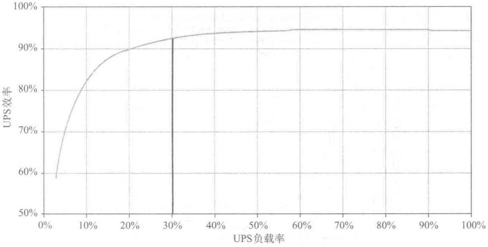

另外，休眠功能还有一个令数据中心担心的问题是休眠后能否及时唤醒，若休眠模块不能及时唤醒，那么，带载的模块就可能出现过载保护的情况。本项目采取的运行策略是，在带载逆变器负荷率大于60%时，就唤醒休眠的模块带载。

此外，UPS逆变器模块休眠还采用自动轮换技术，每间隔一定时间，休眠的逆变器模块自动唤醒，而带载的模块自动休眠。这样一来，不仅自动测试了UPS休眠功能，也使得逆变器模块在整个生命周期内带载时间均衡。
（2）冷源系统的优化控制
对冷源系统冷量的瞬时值和累积值进行监测，冷水机组优先采用由冷量优化控制运行台数的方式。对于京东集团华东数据中心选用的三级压缩离心式冷水机组来说，40%～80%负载为其高效率区（见图10-51）。所以根据系统负荷的变化，合理控制冷水机组的开启台数，使机组负载经常保持在高效区运行，对于机组节能有显著效果。
京东集团华东数据中心冷源系统的设计供水和回水的温度分别为10℃和16℃。在实际运行过程中，根据室外环境的变化调整冷冻水供水温度设定值可以节省冷机功耗。有研究表明，冷冻水供水温度提高1℃，冷机功耗可降低4%左右。提高冷冻水供水温度还能延长自然冷却工况的运行时间。经过理论测算，当供水温度为14℃时，自然冷却工况可运行3.5～4个月；当供水温度为12℃时，自然冷却工况可延长1个月左右。而实际情况表明，当供水温度提高到14℃甚至更高，全年可使用自然冷却的时间长达半年。而且14℃的供水温度依然能保持机房环境温度在26℃左右，符合GB 50174—2017的要求温度。
在自然冷却状态下，关闭冷水机组使其进入待用状态。只开启冷冻和冷却水泵、冷却塔，保持供水水温在16℃以下。在完全免费制冷季切换到常规制冷季过渡时段（即气温小幅升高基本稳定，但未到常规制冷设计室外状态点），可先开启一组冷源设备，将